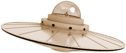
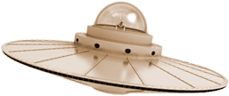
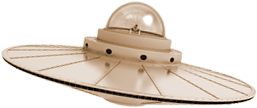
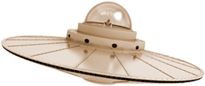

Operator:
Adresa:
E-mail:
Delia Davidescu
Chapel Road 11a, 82287 Jesenwang
deliaalina.davidescu@gmail.com
Postările publicate în acest blog sunt opiniile personale ale autorului. Acestea nu sunt recomandări de cumpărare sau servicii de consultanță. Nu se oferă nicio garanție pentru exactitatea declarațiilor. Înainte de a investi în titlurile menționate mai sus, fiecare cititor trebuie să se informeze. Acest site este privat. Aceasta înseamnă că operatorul acestui site nu câștigă bani prin contribuții, linkuri etc.
Oferta mea conține legături către site-uri externe ale unor terțe părți, ale căror conținuturi nu au nici o influență. Prin urmare, nu ne putem asuma nicio răspundere pentru aceste conținuturi externe. Furnizorul sau operatorul respectiv al paginilor este întotdeauna responsabil pentru conținutul paginilor conectate. Paginile legate au fost verificate pentru posibilele încălcări legale în momentul conectării. Conținutul ilegal nu a fost recunoscut la momentul legării. Cu toate acestea, un control permanent al conținutului paginilor conectate nu este rezonabil fără dovezi concrete ale unei încălcări. După notificarea încălcărilor, vom elimina imediat aceste linkuri.
Conținutul și lucrările pe aceste pagini create de operatorii de site-uri sunt supuse legislației germane privind drepturile de autor. Reproducerea, prelucrarea, distribuția și orice fel de exploatare în afara limitelor drepturilor de autor necesită consimțământul scris al autorului sau creatorului respectiv. Descărcările și copiile acestui site sunt numai pentru uz privat, necomercial. În ceea ce privește conținutul din această parte nu a fost creat de către operator, drepturile de autor ale terților sunt luate în considerare. În special conținutul terților este marcat ca atare. Dacă totuși trebuie să fiți conștienți de încălcarea drepturilor de autor, solicităm o notă. După notificarea încălcărilor, vom elimina imediat acest conținut.
Când accesați site-ul nostru web, se înregistrează automat informații de natură generală. Această informație (fișierele jurnal server) include, de exemplu, tipul de browser web, sistemul de operare utilizat, numele de domeniu al furnizorului dvs. de servicii de Internet și altele asemenea. Acestea sunt doar informații care nu permit concluzii despre persoana dvs. Aceste informații sunt necesare din punct de vedere tehnic pentru a furniza corect conținutul paginilor web solicitate de dvs. și este obligatorie atunci când utilizați internetul. Informațiile anonime de acest tip sunt evaluate statistic de noi, pentru a optimiza aspectul Internetului și tehnologia din spatele acestuia.
La fel ca multe alte site-uri web, folosim și așa-numitele "cookie-uri". Cookie-urile sunt fișiere text mici care sunt transferate de pe un server de site-uri pe hard disk. Acest lucru ne oferă automat anumite date, cum ar fi adresa IP, browserul folosit, sistemul de operare de pe computer și conexiunea la Internet.Cookies nu pot fi utilizate pentru a lansa programe sau pentru a transfera viruși pe un computer. Pe baza informațiilor conținute în cookie-uri, putem facilita navigarea și permite afișarea corectă a site-urilor noastre. În nici un caz datele colectate de noi nu vor fi transmise unor terțe părți sau o legătură cu datele personale va fi stabilită fără consimțământul dumneavoastră. de asemenea, puteți vizualiza site-ul nostru fără cookie-uri. Navigatoarele Internet sunt setate regulat să accepte cookie-uri. Puteți dezactiva oricând utilizarea cookie-urilor prin setările browserului dvs. Utilizați funcțiile de ajutor ale browserului dvs. de internet pentru a afla cum puteți schimba aceste setări. Rețineți că unele funcții ale site-ului nostru Web ar putea să nu funcționeze dacă ați dezactivat utilizarea modulelor cookie.
Pentru a proteja securitatea datelor în timpul transmisiei, folosim tehnici de criptare de ultimă oră (cum ar fi SSL) pe HTTPS.
Pe unele dintre site-urile noastre încorporăm videoclipuri YouTube. Plugin-urile corespunzătoare sunt operate de YouTube, LLC, 901 Cherry Ave., San Bruno, CA 94066, SUA. Când vizitați o pagină cu plug-in-ul YouTube, se va conecta la serverele Youtube. Youtube va fi informat ce pagini vizitați. Dacă sunteți conectat (ă) la contul dvs. Youtube, Youtube vă poate atribui personal comportamentul dvs. de navigare. Acest lucru poate fi prevenit prin deconectarea din contul dvs. Youtube în prealabil. Dacă un videoclip YouTube este pornit, furnizorul utilizează module cookie care colectează informații despre comportamentul utilizatorilor. Orice persoană care a dezactivat stocarea cookie-urilor pentru programul Google Ad nu va trebui să se aștepte la astfel de cookie-uri atunci când vizionați videoclipuri YouTube. Youtube stochează de asemenea informații de utilizare non-personale în alte cookie-uri. Dacă doriți să împiedicați acest lucru, trebuie să blocați stocarea cookie-urilor în browser.Pentru mai multe informații despre protecția datelor la "Youtube", consultați politica de confidențialitate a furnizorului la: https://www.google.de/intl/ ro / policies / privacy /
Site-urile noastre utilizează pluginuri sociale ale furnizorilor enumerați mai jos. Plugin-urile pot fi recunoscute de faptul că acestea sunt marcate cu sigla corespunzătoare. Aceste pluginuri pot fi utilizate pentru a trimite furnizorului de servicii informații care pot include informații personale și pot fi utilizate de către furnizorul de servicii. Împiedicăm colectarea și transmiterea inconștientă și nedorită de date furnizorului de servicii printr-o soluție cu 2 clicuri. Pentru a activa un plug-in social dorit, acesta trebuie activat mai întâi făcând clic pe butonul corespunzător. Numai prin această activare a pluginului este detectarea informațiilor și transmiterea lor către furnizorul de servicii declanșat. Nu colectăm informații personale de identificare prin intermediul pluginurilor sociale sau al utilizării acestora. Nu avem control asupra datelor colectate de pluginul activat și a modului în care acesta este utilizat de către furnizor. În prezent, trebuie să se presupună că o conexiune directă la serviciile furnizorului va fi extinsă și cel puțin adresa IP și informațiile legate de dispozitiv vor fi colectate și utilizate. De asemenea, este posibil ca furnizorii de servicii să încerce să salveze cookie-urile pe calculatorul utilizat. Consultați politica de confidențialitate a furnizorului de servicii respectiv pentru a vedea care date specifice sunt colectate aici și modul în care sunt utilizate. Notă: Dacă sunteți conectat la Facebook, în același timp, Facebook ar putea să identificați ca un vizitator la un anumit page.We au integrat butoanele de social media ale următoarelor companii de pe site-ul nostru: Facebook Inc. (1601 S. California Ave - Palo Alto - CA 94304 - Statele Unite ale Americii) Twitter Inc. (795 Folsom St. - Suite 600 - San Francisco - CA 94107 - SUA) Google Plus / Google Inc (1600 Amphitheatre Parkway - Mountain View - CA 94043 -
Aveți dreptul să primiți în orice moment informații despre datele dvs. personale stocate de noi. De asemenea, aveți dreptul la corectarea, blocarea sau, în afară de stocarea prescrisă a datelor pentru tranzacțiile de afaceri, ștergerea datelor dvs. personale. Contactați ofițerul nostru pentru protecția datelor. Detaliile de contact pot fi găsite în partea inferioară. Pentru o blocare a datelor care trebuie luată în considerare în permanență, aceste date trebuie să fie stocate într-un fișier de blocare pentru scopuri de control. De asemenea, puteți solicita ștergerea datelor, atât timp cât nu există o obligație de arhivare legală. În măsura în care există o astfel de obligație, vă blocăm datele la cerere. Puteți să vă modificați sau să vă retrageți consimțământul, anunțându-ne cu efect pentru viitor.
Ne rezervăm dreptul de a modifica din când în când această politică de confidențialitate pentru a ne asigura că respectă cerințele legale în vigoare sau pentru a implementa modificări ale serviciilor noastre în Politica de confidențialitate, cum ar fi: De exemplu, atunci când introducem noi servicii. Noua dvs. vizită va face obiectul noii politici de confidențialitate.